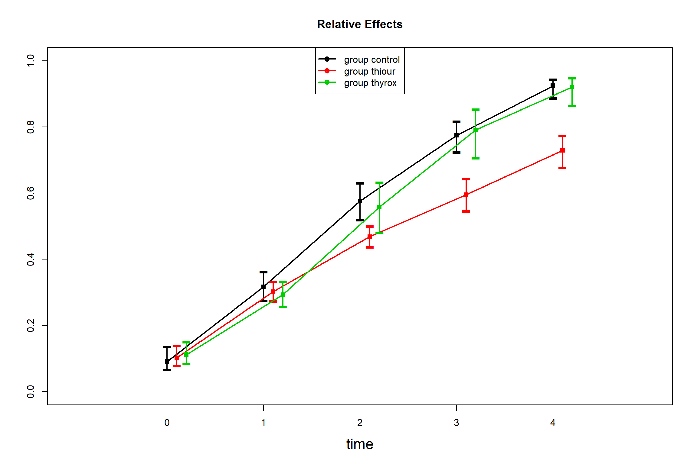

Chapter 10 nparLD tutorial - Rat study
Walkthrough of the rat growth study example from the nparLD paper by Noguchi, et al., 2012, “nparLD: An R software package for the nonparametric analysis of longitudinal data in factorial experiments”, Journal of Statistical Software, 50(12), URL: https://www.jstatsoft.org/index.php/jss/article/view/v050i12/v50i12.pdf.
10.1 Set up
# Load libraries ---------------------------------------------------------------
library(nparLD)
library(dplyr)
library(knitr)
library(kableExtra)
# Import the data --------------------------------------------------------------
data("rat")The rat data set looks like this (first 20 observations shown):
rat %>%
head(n = 20) %>%
kable() %>%
kable_styling() %>%
scroll_box(width = "400px", height = "350px")| resp | time | group | subject |
|---|---|---|---|
| 46 | 0 | control | 1 |
| 49 | 0 | control | 2 |
| 49 | 0 | control | 3 |
| 51 | 0 | control | 4 |
| 52 | 0 | control | 5 |
| 56 | 0 | control | 6 |
| 57 | 0 | control | 7 |
| 57 | 0 | control | 8 |
| 60 | 0 | control | 9 |
| 63 | 0 | control | 10 |
| 52 | 0 | thyrox | 11 |
| 52 | 0 | thyrox | 12 |
| 54 | 0 | thyrox | 13 |
| 56 | 0 | thyrox | 14 |
| 57 | 0 | thyrox | 15 |
| 59 | 0 | thyrox | 16 |
| 59 | 0 | thyrox | 17 |
| 46 | 0 | thiour | 18 |
| 51 | 0 | thiour | 19 |
| 51 | 0 | thiour | 20 |
10.2 Run the omnibus model
This is the code chunk that gives us our “ANOVA-type” statistics for assessing main and interaction effects.
# Build the omnibus model
omnibus_model <- nparLD(
resp ~ time * group,
data = rat,
subject = "subject",
description = FALSE,
order.warning = FALSE)## Model:
## F1 LD F1 Model
##
## Call:
## resp ~ time * group
##
## Relative Treatment Effect (RTE):
## RankMeans Nobs RTE
## groupcontrol 72.92000 50 0.53644444
## groupthyrox 72.67143 35 0.53460317
## groupthiour 59.81000 50 0.43933333
## time0 14.20714 27 0.10153439
## time1 41.55714 27 0.30412698
## time2 72.57857 27 0.53391534
## time3 97.68810 27 0.71991182
## time4 116.30476 27 0.85781305
## groupcontrol:time0 12.75000 10 0.09074074
## groupcontrol:time1 43.30000 10 0.31703704
## groupcontrol:time2 78.25000 10 0.57592593
## groupcontrol:time3 105.00000 10 0.77407407
## groupcontrol:time4 125.30000 10 0.92444444
## groupthyrox:time0 15.57143 7 0.11164021
## groupthyrox:time1 40.07143 7 0.29312169
## groupthyrox:time2 75.78571 7 0.55767196
## groupthyrox:time3 107.21429 7 0.79047619
## groupthyrox:time4 124.71429 7 0.92010582
## groupthiour:time0 14.30000 10 0.10222222
## groupthiour:time1 41.30000 10 0.30222222
## groupthiour:time2 63.70000 10 0.46814815
## groupthiour:time3 80.85000 10 0.59518519
## groupthiour:time4 98.90000 10 0.72888889
##
## Wald-Type Statistc (WTS):
## Statistic df p-value
## group 12.52657 2 1.904977e-03
## time 3619.03739 4 0.000000e+00
## group:time 70.34311 8 4.199050e-12
##
## ANOVA-Type Statistc (ATS):
## Statistic df p-value
## group 5.286582 1.922792 5.654723e-03
## time 1008.512138 1.990411 0.000000e+00
## group:time 11.093940 3.516933 3.616929e-08
##
## Modified ANOVA-Type Statistic for the Whole-Plot Factors:
## Statistic df1 df2 p-value
## group 5.286582 1.922792 19.23468 0.01563658
10.3 Run multiple comparison tests
To run multiple comparison (pairwise) tests, we firstly create data subsets that focus on the pair of factor levels we want to compare.
10.3.1 Main effect for GROUP
For instance, the results from the omnibus model indicate a statistically significant main effect for “group”. There are three possible groups that samples came from: control, thyrox, or thiour. We want to compare all pairs of levels within the factor “group” to identify exactly where the difference(s) lie. This means comparing these pairs:
- control vs. thyrox
- control vs. thiour
- thyrox vs. thiour
rat %>%
filter(group %in% c("control", "thyrox")
) -> group_control_vs_thyrox
rat %>%
filter(group %in% c("control", "thiour")
) -> group_control_vs_thiour
rat %>%
filter(group %in% c("thyrox", "thiour")
) -> group_thyrox_vs_thiourThen we re-run the non-parametric model with the same model structure as the omnibus model, but pointing to each data subset we have created, in turn.
pairwise_control_vs_thyrox <- nparLD(
resp ~ time * group, # note: same structure as the omnibus model
data = group_control_vs_thyrox, # we change this argument only
subject = "subject",
description = FALSE,
order.warning = FALSE)
pairwise_control_vs_thiour <- nparLD(
resp ~ time * group,
data = group_control_vs_thiour,
subject = "subject",
description = FALSE,
order.warning = FALSE)
pairwise_thyrox_vs_thiour <- nparLD(
resp ~ time * group,
data = group_thyrox_vs_thiour,
subject = "subject",
description = FALSE,
order.warning = FALSE)Check the “group” effect p value for each pairwise comparison. Note: Level for statistical significance with Bonferroni correction = 0.01666667 (alpha of 0.05 divided by number of tests = 0.05 / 3 = 0.01666667).
# control vs. thyrox
pairwise_control_vs_thyrox_p <- data.frame(
pairwise_control_vs_thyrox$ANOVA.test)
pairwise_control_vs_thyrox_p %>%
mutate(
paired_levels = "control_vs_thyrox",
factor = rownames(pairwise_control_vs_thyrox_p)
) -> pairwise_control_vs_thyrox_p
# control vs. thiour
pairwise_control_vs_thiour_p <- data.frame(
pairwise_control_vs_thiour$ANOVA.test)
pairwise_control_vs_thiour_p %>%
mutate(
paired_levels = "control_vs_thiour",
factor = rownames(pairwise_control_vs_thiour_p)
) -> pairwise_control_vs_thiour_p
# thyrox vs. thiour
pairwise_thyrox_vs_thiour_p <- data.frame(
pairwise_thyrox_vs_thiour$ANOVA.test)
pairwise_thyrox_vs_thiour_p %>%
mutate(
paired_levels = "thyrox_vs_thiour",
factor = rownames(pairwise_thyrox_vs_thiour_p)
) -> pairwise_thyrox_vs_thiour_p
# Merge pairwise comparison results into one data frame
# for ease of displaying
group_pairwise_comparisons <- rbind(
pairwise_control_vs_thyrox_p,
pairwise_control_vs_thiour_p,
pairwise_thyrox_vs_thiour_p)
# Set Bonferroni-corrected alpha level
group_alpha_level <- (0.05 / 3)
# Re-organise table
group_pairwise_comparisons %>%
select(
factor, paired_levels, Statistic, df, p.value) %>%
filter(factor == "group") %>%
mutate(
sig_diff = case_when(
p.value < group_alpha_level ~ "Yes",
TRUE ~ "No")
) -> group_pairwise_comparisons| factor | paired_levels | Statistic | df | p.value | sig_diff |
|---|---|---|---|---|---|
| group | control_vs_thyrox | 0.0170903 | 1 | 0.8959890 | No |
| group | control_vs_thiour | 10.6081950 | 1 | 0.0011259 | Yes |
| group | thyrox_vs_thiour | 6.0854237 | 1 | 0.0136302 | Yes |
10.3.2 Main effect for TIME
The omnibus model indicates a statistically significant main effect for “time”. This factor has 5 levels (in this case, 5 time points): time 0, time 1, time 2, time 3, time 4.
To identify where differences lie within the main effect for “time”, we would need to create 10 subsets for the following pairwise comparisons:
- time 0 vs. time 1
- time 0 vs. time 2
- time 0 vs. time 3
- time 0 vs. time 4
- time 1 vs. time 2
- time 1 vs. time 3
- time 1 vs. time 4
- time 2 vs. time 3
- time 2 vs. time 4
- time 3 vs. time 4
Note: For this part of the analysis, the Bonferroni correction would adjust the alpha level for the 10 pairwise tests we would conduct. So an alpha of 0.05 divided by 10 (# of pairwise tests) = significant pairwise differences defined at p < 0.005.
10.3.3 Interaction effect for GROUP * TIME
The omnibus model indicates a statistically significant interaction effect for “group” x “time”.
To identify where differences lie within the interaction effect, we would need to create 15 subsets for the following pairwise comparisons:
- control vs. thyrox @ time 0
- control vs. thiour @ time 0
- thyrox vs. thiour @ time 0
- control vs. thyrox @ time 1
- control vs. thiour @ time 1
- thyrox vs. thiour @ time 1
- control vs. thyrox @ time 2
- control vs. thiour @ time 2
- thyrox vs. thiour @ time 2
- control vs. thyrox @ time 3
- control vs. thiour @ time 3
- thyrox vs. thiour @ time 3
- control vs. thyrox @ time 4
- control vs. thiour @ time 4
- thyrox vs. thiour @ time 4
Note: For this part of the analysis, the Bonferroni correction would adjust the alpha level for the 15 pairwise tests we would conduct. So an alpha of 0.05 divided by 15 (# of pairwise tests) = significant pairwise differences defined at p < 0.0033.